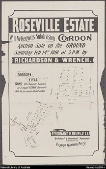
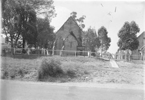

W H McKeown Ephemera


Manly Daily 17 Nov 2009
Church Point
At the end of the picturesque and curving road to Church Point, land was given to the Wesleyan community by William Oliver and on it one of the first buildings erected in Pittwater for public worship was built. But it was not in a building of any sort that Pittwater folk first met to unite in public worship. The first religious service was held under loquat trees on the shores of Bayview. Mr Oliver gave the Methodist Church one acre of ground for ten shillings with the proviso a church would be built soon afterwards. The little wooden church was built in 1872 at a cost of 60 pounds and it stood on the hillside above the Pasadena (where some of the graveyard can still be seen) until its demolition 60 years later.
The simple church boasted a manual pedal organ, ornate pulpit and coconut matting covered the wooden floor. Among the parishioners were the Misses Woods who, dressed in long white dresses and shady hats, sailed across from Lovett Bay in their sailing boat every Sunday. For a time the area was known at Chapel Point. William Henry McKeown who, along with George McIntosh was one of the instigators of the church, first gave a saddle horse to bring the preacher to the services
Lester Warburton
PYMBLE HEIGHTS ESTATE
“The first land transaction of the subdivision was on 1 November 1892 when William McKeown sold lots 5 to 15 to the Rev. Paul Clipsham.
“In November 1892 William Henry McKeown subdivided the remainder of his land and advertised it for sale as the Pymble Heights Estate....The boundaries were Station Street to the west and the earlier Roseville Estate and Stoney Creek Road to the east....When the subdivision was first promoted only Hope and Church Streets serviced the area. Church Street had been named after the Methodist Church, which was located on the eastern side of Stoney Creek Road. By 1895 seven of the ten lots south of Church Street had been reconfigured to make twenty-four smaller lots. Edwards and Emily Streets were formed: these were later known as King Edward Street....By 1898 the Sand’s directory listed five households in the area.” (Harvey, Jennifer, unpublished draft article Pymble)

The Methodist 1912
THE LATE W. H. McKEOWN.
A service in memory of the late W.H. McKeown was held in the Pymble Church on Sunday morning, 23rd inst. The church was suitably draped, and the choir, under Mr. Cresswell O'Reillv, rendered appropriate music. In referring to the various qualities of the departed veteran, the Rev. T. F Potts said that in commercial matters the ethical idea was sovereign and supreme. He had a noble capacity for scorning the base, and would not suffer the temporal to eclipse the eternal.
His faith was not the dim, vague thing of a Browning suggestive of cloudy day or starry night but strong, clear, luminous as the sun. The inward law of right and wrong, and the inspiring influences of the Holy Spirit determined his Iife, which consequently. was one of moral force that made for righteousness. Mr. McKeown's character bore the impress and seal of the Master. The one outstanding feature of his life was his patient continuance in well-doing. Duty was to him an imperative call, a divine summons; and its discharge put a blue sky above his head, and the melody of heaven in his heart. Though not great, W. H. McKeown was good, and goodness is one of the most beautiful and triumphant powers upon earth. The many loving tributes to his worth and work reveal that the memory of the just is blessed.
The following memoir was also read during the service:-- Of the late William
McKeown it might truly be said that he was " an old disciple.'' From his boyhood to his death, at the age of almost 91 years, he walked in the fear of God, and of that period for well-nigh seventy years he rejoiced in the love of God. He was born in Ireland in 1821; arrived in Australia in l840, and settled in this district (then known as Lane Cove) in l844 or I845. Immediately he sought out a small company who met for prayer, and so began his long and faithful association with Methodism in the North Sydney district.
It was mainly through his efforts and gifts that the pioneer church on Gordon-road (now used as a store) was built and paid for--a church that was the scene of many revivals, and the centre of much useful work; and that did excellent duty until it was succeeded by the present church at Lane Cove in 1880. Subsequently to the erection of the "Lane Cove" Church, as it was called, Mr. McKeown was largely instrumental in establishing services and erecting churches at South Colah (now known as Normanhurst), at Willoughby (now Chatswood) at Pittwater, and also at North Sydney. It may in truth be said that the history of Methodism in the North Shore district from I845 to 1895 is large coincident with the life and work of Mr. W. H. McKeown for that long period of 50 years. As Sunday School Superintendent, class leader local preacher and circuit steward he served with singular diligence and devotion, and on two occasions public recognition was made of his long and faithful Service --first in 1885, on the completion of 40 years useful residence, and again in 1895, on the attainment of his jubilee in the district.
RYDE AND THE NORTHERN RAILWAY.
TO THE EDITOR OF THE HERALD.
Sir,-I trust you will pardon me for again craving a little of your valuable space on the question of a Northern railway to Sydney. I am strongly of opinion that our neighbours at Ryde, who are at present engaged in the railway agitation, are disregarding the best interests of the country in attempting to divert the iron horse of the north from his most direct course and legitimate destination on the northside of Port Jackson. If they had moved for a suburban line from Manly, crossing the" Spit and Lane Cove River,then passing through the Common and over the newbridges, they would have aimed at abundant accommodation without intruding upon the interests of St.Leonards ; and would have benefited themselves as thoroughly in the accomplishment of such a project as by carrying the Northern line through their very midst. No doubt the day is not very distant when Ryde and Manly will be linked to St.Leonards by rail, and as such a line will cross the main one-probably about four miles from the harbour-it is evident that the former would greatly augment the trade of the principal line. But whatever may be the interests of Ryde, it is not likely that St. Leonards will forego its claim, and still more unlikely that important towns in the north will rest, satisfied with aught but the shortest and most convenient route to Sydney. The increase of population at St. Leonards, its deep water-frontages, its proximity to the seat of exportation, and its adaptation to become the emporium of an extensive and flourishing part of NewSouth Wales, imperatively point to it as the terminus.
Make the terminal station elsewhere, and you slight
the demands of nature and the interests of those
whom the railway is intended to advance. But by
following the natural course, and throwing a bridge across the harbour, together with the extension of the present line of railway to the Circular Quay, we should have the north and south of this colony united sufficiently near to facilitate business, and far enough apart to obviate embarrassment.
Knowing that the leaders in the Ryde agitation are
reasonable and honest men, I think they will admit that the weight of argument is in favour of North Shore ; and I, therefore trust that they will co-operate with us in a grand scheme which will develop on the north side of our beautiful harbour a city equal or superior to that on the south.By acting thus they will study the welfare of the majority,and will also free our representative from the difficulties arising from our divided interests. Then, when the various lines are surveyed and reported upon, and the line we now
advocate is found to possess advantages superior to all others,our member will be free, and in accordance with his old plan, will be able to go in heartily for a suburban line from Manly via Ryde to Sydney.
I am, &c., W. H. M'KEOWN.
Roseville, Lane Cove, October 4
The Sydney Morning Herald Friday 18 Oct 1878 pg. 7
To tell the full tale of the good he attempted and accomplished during his long and active life--and especially in the interval between 1845 and 1895-- would require more time and space than is at our disposal. His home was ever open, alike to ministers, local preachers and Christian workers. It was a place of kindly hospitality remembered to this day by hundreds who shared in it. His personal services were always at the disposal of every good cause, and at the call of every case of poverty, sorrow, or need in the neighbourhood. His horses and conveyance were freely lent for the fulfilment of preaching appointments by others, and his purse was open to help to its utmost limits every call of Church or charity. In all this he found a ready and cheerful helper in Mrs. McKeown, who survives her husband and whose cheerful and unselfish piety made her equally universally esteemed.
Mr. McKeown was also a good citizen in every sense of the word. He was deeply interested in the social, moral and material advancement of the district, and did much to promote its development along those lines. He was a model employer of labour, a conscientious and upright man of business, and patriotically interested in both the local and national aspects of current political affairs. If tho man who makes two blades of grass grow where only one grew before is a benefactor to his country, Mr. McKeown could claim that distinction, for in fruit culture and other matters he led the way in many lines of improved production.
But, undoubtedly his greatest contribution to the good of this district and to his generation vas to be found in his long-sustained
and fully-tested Christian character. For the long period of the greater part of a century he wore the white flower of a blameless
life. He enjoyed almost universal esteem, for in every relationship of life he was tried and found worthy. In the inner circle of his
family and intimate friends he was regarded with singular affection and of late with a feeling akin to reverence for his serenity of
mind, his kindliness of spirit, and his transparent Christian goodness. He was in very truth, a saint of God. Fully fifty years ago he sought and found the blessing of perfect love and from then to the hour of his death he "walked in the light," and rejoiced to experience that "the blood of Jesus Christ his Son cleanseth from all sin." A favourite verse of his-- and he had a wonderful knowledge of the hymnbook --was: --
" O Love, Thou bottomless abyss,
My sins are swallowed up in Thee!
Covered is my unrighteousness,
Nor spot of guilt remains on me,
While Jesus's blood, through earth and skies
Mercy, free, boundless mercy, cries!"
In the long and somewhat shadowed day of waiting for the end his faith
never wavered his hope was undimmed, and his love as simple and
trustful as that of a child. On his 90th birthday he invited his family and
some friends to join him in his home in a thanksgiving service, and in an
address of beautiful simplicity and deep feeling he recounted God's
goodness to him over a prolonged life-time, testified to the abundant
preciousness of a present ever-living Saviour, and with holy exultation
looked forward to being with Him--" at home " with the Father--ere
another birthday should come round. His last year was one of
much physical weariness and considerable suffering. But he never
murmured. His sick room was to many visitors a very Bethel. Ministers and others who prayed with him found it to be " quite on the verge of Heaven." While yet in the flesh he caught glimpses of the shining table-lands, he dwelt in the land of Beulah; he heard echoes of the songs of the redeemed and he rejoiced with holy confidence in the full assurance that when the thin veil should be drawn aside he would also see Jesus and ' Range o'er the plains on the banks of the river And sing of salvation for ever and ever."
In the early hours of the Sabbath morn he went home, and, considering his long and useful life, his Saintly character, and his rich
experience of Divine things, we may surely say in the language of Bunyan, "all the bells of tho Celestial City rang out a welcome."
" Mark the perfect man, and behold the upright, for the end of that man is peace."


Methodist Church Pymble. State Library NSW